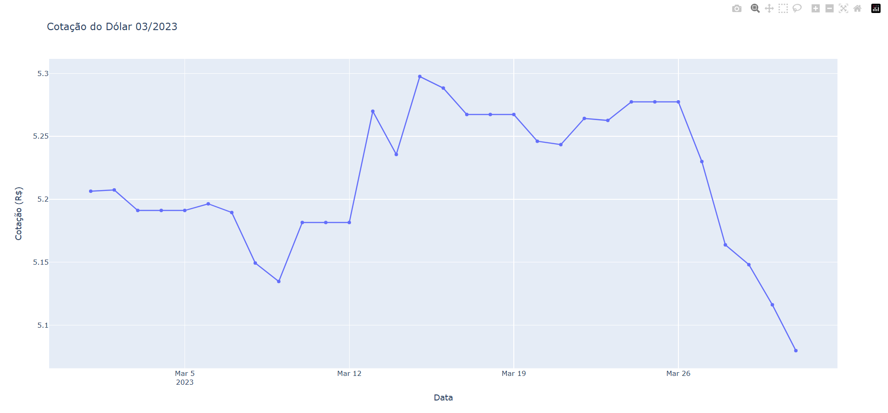
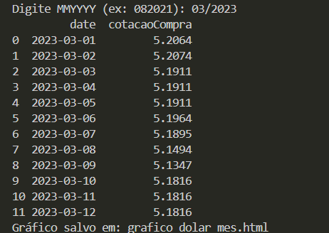

Atividade 1 — Cotação do Dólar por Período
Introdução
Esta atividade faz parte do Trabalho Individual da disciplina de Algoritmos.
O objetivo é desenvolver uma rotina que receba um parâmetro no formato “MMYYYY” e retorne um gráfico de linha com a variação da cotação do dólar no período informado.
Para isso foi utilizada a API PTAX – Cotação do Dólar por Período, disponibilizada pelo Banco Central do Brasil:
🔗 https://olinda.bcb.gov.br/olinda/servico/PTAX/versao/v1/swagger-ui3#/
Cada aluno recebeu um mês e ano específicos.
Minha função transforma o valor recebido (ex.: "102023") em:
- Data inicial: primeiro dia do mês
- Data final: último dia do mês
As datas são calculadas utilizando datetime e calendar.
Além disso, a API não fornece cotação em finais de semana ou feriados.
Nestes casos, foi utilizada a cotação do dia útil anterior, conforme instrução da atividade.
Construção da função
A função criada realiza os seguintes passos:
- Recebe o parâmetro no formato
"MMYYYY"
- Converte para uma data
- Calcula o primeiro e último dia do mês
- Monta a URL de consulta da API PTAX
- Busca os valores de compra (
cotacaoCompra)
- Preenche fins de semana e feriados com o último valor válido
- Gera um gráfico de linha utilizando Plotly
Código utilizado
import calendar
from datetime import datetime, timedelta
import pandas as pd
import requests
import plotly.graph_objects as go
def mmYYYY_to_date(mmYYYY: str):
first_date = datetime.strptime(mmYYYY, "%m/%Y")
last_day = calendar.monthrange(first_date.year, first_date.month)[1]
first = first_date.replace(day=1)
last = first_date.replace(day=last_day)
return first.strftime("%m-%d-%Y"), last.strftime("%m-%d-%Y"), first, last
def fetch_cotacoes_bc(mmYYYY: str, moeda="USD"):
data_ini_str, data_fim_str, first_dt, last_dt = mmYYYY_to_date(mmYYYY)
base = "https://olinda.bcb.gov.br/olinda/servico/PTAX/versao/v1/odata"
endpoint = "CotacaoMoedaPeriodo(moeda=@moeda,dataInicial=@dataInicial,dataFinalCotacao=@dataFinalCotacao)"
params = (
f"@moeda='{moeda}'&@dataInicial='{data_ini_str}'&@dataFinalCotacao='{data_fim_str}'"
"&$top=10000&$format=json&$select=cotacaoCompra,dataHoraCotacao"
)
url = f"{base}/{endpoint}?{params}"
resp = requests.get(url, timeout=30)
resp.raise_for_status()
j = resp.json()
rows = []
for rec in j.get("value", []):
dt = rec.get("dataHoraCotacao")
if dt is None:
continue
date_only = datetime.fromisoformat(dt).date()
rows.append({
"date": date_only,
"cotacaoCompra": float(rec.get("cotacaoCompra"))
})
df = pd.DataFrame(rows)
if df.empty:
raise ValueError("Nenhuma cotação retornada pela API para o período informado.")
df = df.sort_values("date").drop_duplicates(subset="date", keep="last").reset_index(drop=True)
return df, first_dt.date(), last_dt.date()
def build_full_month_series(df_cotacoes, first_date, last_date):
all_dates = pd.date_range(start=first_date, end=last_date, freq='D')
df_all = pd.DataFrame({"date": all_dates})
df_cotacoes["date"] = pd.to_datetime(df_cotacoes["date"])
df_all["date"] = pd.to_datetime(df_all["date"])
df_all = (
df_all
.merge(df_cotacoes, on="date", how="left")
.sort_values("date")
)
df_all["cotacaoCompra"] = df_all["cotacaoCompra"].ffill()
return df_all
def plot_plotly(df_full, title="Cotação do Dólar - PTAX"):
fig = go.Figure()
fig.add_trace(go.Scatter(x=df_full["date"], y=df_full["cotacaoCompra"], mode="lines+markers", name="PTAX (compra)"))
fig.update_layout(title=title, xaxis_title="Data", yaxis_title="Cotação (R$)", hovermode="x unified")
out_html = "grafico_dolar_mes.html"
fig.write_html(out_html, include_plotlyjs='cdn')
print(f"Gráfico salvo em: {out_html}")
return fig
if __name__ == "__main__":
mmYYYY = input("Digite MMYYYY (ex: 102023): ").strip()
df_cot, first_date, last_date = fetch_cotacoes_bc(mmYYYY)
df_full = build_full_month_series(df_cot, first_date, last_date)
print(df_full.head(12))
fig = plot_plotly(df_full, title=f"Cotação do Dólar {mmYYYY}")
fig.show()Gráfico gerado

Resultado no programa

Conclusão
Nesta atividade implementei uma função completa para obter e visualizar a cotação do dólar para um período específico, seguindo as etapas solicitadas:
Tratamento da data no formato “MMYYYY”
Construção das datas inicial e final
Consumo da API PTAX
Tratamento de dias sem cotação
Geração de gráfico com Plotly
O resultado final é um gráfico que permite visualizar claramente a variação do dólar no mês selecionado.